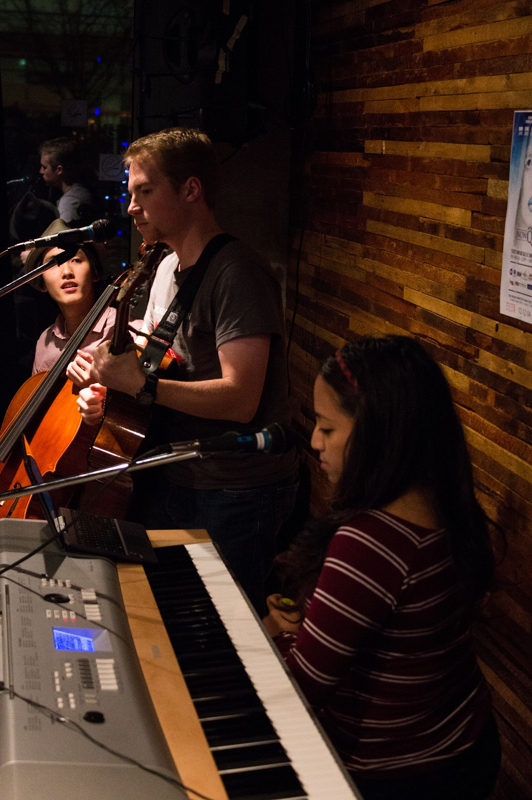
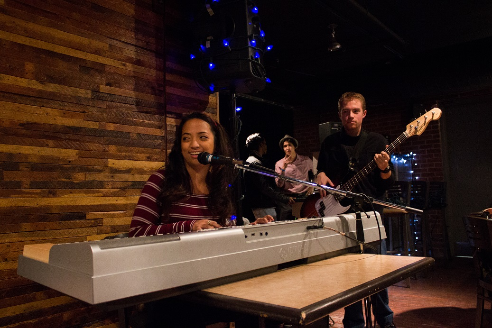

VICTOR AND MARICRIS

Article by Lauren Malyk
Photos by Kelsey Giesbrecht
Uploaded on December 1, 2014
Nobody understands the power of music in bringing people together quite like musicians, and Victor Copetti and Maricris Rivera have succumbed to its magnetic force.
I sat with Rivera in the cozy, yet crowded Musicians@Ryerson office. The petite and lively brunette is surrounded by instruments, as she has been her whole life.
Rivera, 20, is an Arts and contemporary studies student and performance coordinator for Musicians@Ryerson. She calls herself a once “hardcore competitive piano child” who has been playing music for fourteen years.
“And I occasionally play on that djembe,” says Rivera with a smile. She motions to the long African drum in the corner of the room. She can also sing and is currently learning how to play the ukulele and guitar.
Copetti, 20, is an urban planning student. He has been playing music for roughly twelve years and was elected last April to be President of Musicians@Ryerson, the second largest club on campus.
Copetti makes a groaning sound and he looks up at the ceiling to try to remember how many instruments he plays. “I’ll go with the main ones; piano, guitar and I sing...a little bit of drums,” says Copetti.
He adds, “Oh bass, I play some bass. I’ve been picking up some ukulele, that’s fun. And I want to try to learn saxophone.”
“I thought you already knew how to play that,” says a surprised Rivera.
“I know the notes, but I don’t really know how to play anything else other than, ‘Fly Me to the Moon,’” says Copetti, as they chuckled.
After high school, Rivera and Copetti found themselves searching for a musical outlet. The partners ended up meeting last year at an open mic night where they were introduced by a mutual friend.
Rivera introduced Copetti to the song, ‘Falling Slowly’ from the hit musical and movie, ‘Once’. After that Rivera and Copetti decided to team up and learn the song. It was the first song they ever performed together. Their collaboration was a success. “And we were just like ‘Hey, this really works’,” says Rivera.
In addition to the song ‘Falling Slowly’, they bond over their love of Ed Sheeran and pop songs that they can turn into their own. “I like the challenge of taking a song, even if it’s something I might not do and then making it my own,” says Copetti.
Copetti and Rivera’s are comfortable in their musical relationship and are not shy to approach each other with different song ideas. They both know what works for the other musically. The thing that makes them different from other musicians is the facts that they’re not afraid to throw in harmonies and change the feeling of a song.
Copetti’s mother is a proud fan of the duo. She has also tried to suggest songs that pair should work on.
“My mom gives me lists and I’m like OK, these are all the songs I don’t want to do now,” says Copetti.
They’ve occasionally played at other Musicians@Ryerson events and with the Beaudifulhors, who are now called Mayraki. Their first set together was for the Musicians@Ryerson’s Darkness concert last year.
The Darkness concert was the turning point for Copetti as he realized music was something he was very passionate about because he had the opportunity to make the music his own. He had the opportunity to chose the music he wanted to perform and play with it. Only by working together on the executive did they become closer.
They plan to keep the tradition alive by hosting and performing at Musicians@Ryerson’s second annual Darkness concert. This year, Musicians@Ryerson is teaming up with the Chinese Students Association and Poetic Exchange to raise awareness about the stigma concerning the visually impaired. All of the proceeds from the concert go to the Canadian National Institute for the Blind (CNIB). The concert is performed in a dark room, in front of a blindfolded audience.
“No falling slowly this time. Something new is coming up,” says Rivera about the Darkness concert.
With the audience blindfolded and the lights are turned down low, it’s time to start the Darkness show.
Copetti and Rivera came on stage close to the end to the end of the concert. Rivera went up first and took the stage to belt out a soulful rendition of “Will You Love Me Tomorrow.” Afterwards, the audience sang along and snickered with Copetti’s stripped down “I’m Sexy and I Know It” performance.
Their performances in the dark separately allowed for the different aspects of their personality to shine through; Copetti with his playfulness and Rivera’s ability to move an audience.
Finally when both performers took the stage together, their music was the perfect mix. They sang and played their hearts out to “I See Fire” and built off of their start with the musical Once by playing “When Your Mind’s Made Up.”
In the future, you can look out to see what music the pair composes. They’ve dabbled in the past but have found themselves struggling to find their voice. Once they write their own music, they plan to start recording something.
“Being busy doesn’t us hold us back and it’s nice to just sit down with him and the music just flows,” says Rivera.

back to spotlight